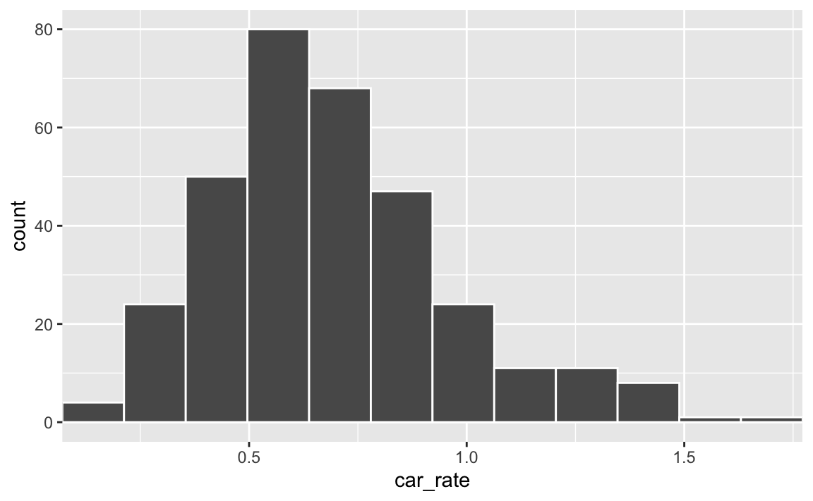

library(ggplot2)
library(scales)
library(dplyr)
library(forcats)
library(stringr)
pod <- readr::read_csv(
here::here("posts/ggplot2-tutorial/table_pod.csv"),
show_col_types = FALSE
)
pod <- filter(pod, code_muni == 36, pop > 0)Legendas, escalas e temas
Escalas
Escalas, no contexto do ggplot, significam tanto a manipulação dos eixos do gráfico como das cores dos elementos. Há uma infinidade de funções scale_* e não vale a pena entrar nos detalhes de cada uma delas. Neste post vou discutir a lógica geral destas funções e apresentar aquelas que acredito que possam ser as mais úteis
O uso de escalas de cores e legendas está intimamente ligado ao tipo de variável que se está visualizando. Para entender melhor o funcionamento das escalas é preciso compreender o tipo de variável que se vai plotar e como o R interpreta esta variável. A próxima seção
Tipos de variáveis
O ggplot, grosso modo, divide as variáveis em contínuas e discretas. As variáveis contínuas, em geral, são numéricas e podem assumir qualquer valor; já as variáveis discretas costumam ser “categóricas” e são “contáveis”. O preço de um imóvel, por exemplo, é uma variável contínua. Já uma variável que categoriza um imóvel entre “casa” e “apartamento” é uma variável discreta.
Esta lógica é aplicada nas funções que controlam os eixos x e y de um gráfico.
scale_y_continuous()scale_y_discrete()scale_x_continuous()scale_x_discrete()
Uma lógica muito similar se aplicas às principais funções que controlam as cores e a legenda de cores de um gráfico:
scale_color_continuous()scale_color_discrete()scale_fill_continuous()scale_fill_discrete()
Mesmo quando modificamos outros aspectos estéticos do gráfico como size e alpha temos:
scale_alpha_continuous()scale_alpha_discrete()scale_size_continuous()scale_size_discrete()
Variáveis contínuas
Uma variável contínua costuma representar algum número. No R há várias formas de armazenar números, mas isto não costuma ser muito relevante para a tarefa de visualização dos dados. Na maior parte dos casos, basta garantir que a coluna numérica em questão seja um número usando is.numeric() ou as.numeric().
Variáveis discretas
Uma variável discreta costuma representar uma categoria. No R existe uma classe especial de variável para armazenar este tipo de dado chamada factor. Um factor é um vetor de texto ou de números que segue uma ordem. Além de ter uma ordem, cada elemento pode ter um label.
factor(x = c(...), levels = c(...), labels = c(...))Para se definir um factor basta usar a função homônima. Note que na ausência de uma ordem explicitamente definida, o R organiza o vetor em ordem alfabética. Se, ao invés de um vetor de texto tivéssemos usado um vetor de números, eles teriam sido ordenados no sentido ascedente (do menor para o maior).
Para acessar a ordem do factor pode-se usar a função order() ou, mais especificamente, a função levels().
#> Criando um factor
medalhas <- factor(c("ouro", "prata", "bronze"))
#> [1] ouro prata bronze
#> Levels: bronze ouro prata
#> Conferindo a ordem dos elementos
order(medalhas)
#> [1] 3 1 2
levels(medalhas)
#> [1] "bronze" "ouro" "prata" O código abaixo recria o factor, deixando mais explícito a estrutura deste tipo de objeto. Note que o argumento levels e labels não precisam ser repetidos.
#> Criando um factor
medalhas <- factor(
c("ouro", "prata", "bronze", "bronze", "ouro", "bronze"),
levels = c("bronze", "prata", "ouro"),
labels = c("Bronze", "Prata", "Ouro")
)
medalhas
#> [1] Ouro Prata Bronze Bronze Ouro Bronze
#> Levels: Bronze Prata OuroTrabalhar com factors pode ser uma tarefa bastante frustrante. Neste sentido, recomendo muito o uso do pacote forcats, que provê uma série de funções fct_* que facilitam muito a manipulação deste tipo de objeto. Os exemplos abaixo mostram algumas das funções mais úteis deste pacote.
df <- data.frame(
x = c(5, 2, 3),
y = factor(c("bronze", "prata", "ouro"))
)
#> Troca a ordem do factor segundo algum outro vetor
fct_reorder(df$y, df$x)
#> [1] bronze prata ouro
#> Levels: prata ouro bronze
#> Troca os labels do factor usando uma função
fct_relabel(df$y, toupper)
#> [1] BRONZE PRATA OURO
#> Levels: BRONZE OURO PRATA
#> Troca os labels do factor manualmente
fct_recode(df$y, "Bronze" = "bronze")
#> [1] Bronze prata ouro
#> Levels: Bronze ouro prata
#> Conta a ocorrência de cada factor
fct_count(df$y)
#> A tibble: 3 × 2
#> f n
#> <fct> <int>
#> 1 bronze 1
#> 2 ouro 1
#> 3 prata 1Por fim, vale comentar brevemente sobre uma particularidade de um factor criado a partir de uma variável numérica. Para converter um factor de texto em character basta usar as.character(x). Para converter de volta um factor de números é preciso usar as.numeric(as.character(x)).
x <- c(1, 10, 2, 5, 1)
y <- as.factor(x)
#> Por padrão, as.numeric retorna a ordem do factor. Equivalente a order()
as.numeric(y)
#> [1] 1 4 2 3 1
#> Para converter de volta no número original
as.numeric(as.character(y))
#> [1] 1 10 2 5 1Escalas: o básico
Vamos começar com um gráfico simples que mostra a renda domiciliar média da Zona OD no eixo-x e o número médio de carros por domicílio no eixo-y.
ggplot(pod, aes(x = income_avg, y = car_rate)) +
geom_point()
No caso do gráfico acima, ambas as variáveis são contínuas, portanto, para alterar algum dos eixos usa-se as funções scale_x_continuous() e scale_y_continuous(). Estas funções tem 4 argumentos principais: breaks, labels, limits e expand.
Para controlar as ‘quebras’ do eixo-x (os pontos onde aparece cada número) usa-se o argumento breaks.
ggplot(pod, aes(x = income_avg, y = car_rate)) +
geom_point() +
scale_x_continuous(breaks = seq(0, 20000, 2500))
Por padrão, o número exibido no gráfico é igual ao argumento fornecido em breaks, mas pode-se alterar isto usando labels. Para ser mais preciso: breaks define a posição onde o labels vai ser exibido.
No exemplo abaixo uso o fato do salário mínimo, à época da pesquisa, ser de R$954.
ggplot(pod, aes(x = income_avg, y = car_rate)) +
geom_point() +
scale_x_continuous(
breaks = 954 * c(2, 4, 6, 10, 15),
labels = stringr::str_glue("{c(2, 4, 6, 10, 15)} S.M.")
)
O argumento labels pode ser qualquer texto, desde que ele tenha o mesmo número de elementos que o argumento breaks. O pacote scales oferece algumas funções label_* pré-definidas que auxiliam a formatar as escalas. O exemplo abaixo mostra como usar a função label_dollar para formatar o eixo-x.
ggplot(pod, aes(x = income_avg, y = car_rate)) +
geom_point() +
scale_x_continuous(
breaks = seq(0, 20000, 2500),
labels = label_dollar(big.mark = ".")
)
Na minha experiência, as funções mais úteis do pacote são:
label_number(): usado para formar números de maneira gerallabel_percent(): usado para formatar números expressados percentualmentelabel_dollar(): usado para formatar números que representam dinheiro
Para seguir o padrão brasileiro, utiliza-se big.mark = "." e decimal.mark = ",".
Para dar um “zoom-in” no gráfico pode-se alterar o argumento limits. Este argumento recebe um par de números para definir o número máximo e mínimo que deve ser plotado. Para deixar o eixo “livre” basta definir o valor como NA.
ggplot(pod, aes(x = income_avg, y = car_rate)) +
geom_point() +
scale_x_continuous(limits = c(3000, 5000)) +
scale_y_continuous(limits = c(NA, 1))
Por fim, o argumento expand diminui ou aumenta a distância entre o gráfico e o limite dos eixos. A aplicação mais comum disso é para reduzir o espaço em branco que “sobra” em alguns gráficos.
O par de histogramas abaixo mostra a distribuição da renda domiciliar média entre as zonas OD.
ggplot(pod, aes(x = car_rate)) +
geom_histogram(bins = 12, color = "white")
ggplot(pod, aes(x = car_rate)) +
geom_histogram(bins = 12, color = "white") +
scale_x_continuous(expand = c(0, 0))

Escalas discretas funcionam praticamente da mesma forma. Uma distinção importante é que, no caso de uma variável discreta ou categórica, o eixo - por padrão - vai plotar o label da variável.
O código abaixo encontra os 5 distritos mais populosos de São Paulo.
dstr_pop <- pod |>
summarise(total_pop = sum(pop), .by = "name_district") |>
slice_max(total_pop, n = 5) |>
mutate(
name_district = factor(
name_district,
labels = c("Capão Redondo", "Grajaú", "Jd. Ângela", "Jd. São Luis",
"Sapopemba")
)
)
ggplot(dstr_pop, aes(x = name_district, y = total_pop)) +
geom_col()
Caso não se queira alterar o tipo da variável é possível definir os labels diretamente na função scale_x_discrete().
ggplot(dstr_pop, aes(x = name_district, y = total_pop)) +
geom_col() +
scale_x_discrete(
labels = c("Capão Redondo", "Grajaú", "Jd. Ângela", "Jd. São Luis",
"Sapopemba")
)
Um pouco mais de escalas
ggplot(pod, aes(x = income_avg, y = car_rate)) +
geom_point() +
scale_x_log10()
ggplot(pod, aes(x = income_avg, y = car_rate)) +
geom_point() +
scale_x_continuous(trans = "log")

ggplot(pod, aes(x = income_avg, y = car_rate)) +
geom_count() +
scale_y_reverse()
ggplot(pod, aes(x = income_avg, y = car_rate)) +
geom_count() +
scale_x_binned() +
scale_y_binned()
O exemplo abaixo é um pouco mais sofisticado
top_car <- pod %>%
slice_max(car_rate, n = 10) |>
mutate(
name_zone = factor(name_zone),
name_zone = forcats::fct_reorder(name_zone, car_rate)
)
ggplot(top_car, aes(x = name_zone, y = car_rate)) +
geom_col() +
coord_flip() +
scale_x_discrete(labels = \(x) stringr::str_wrap(x, width = 12)) +
theme(axis.text.y = element_text(hjust = 0.5))
Datas
Datas têm uma classe especial e, por conseguinte, tem também algumas funções dedicadas. A função scale_x_date tem dois argumentos principais:
date_breaks: que aceita valores como “1 year”, “3 months”, etc.date_labels: que aceita valores como “%Y%m%d”, “%Y%b”, etc.
ggplot(economics, aes(x = date, y = psavert)) +
geom_line() +
scale_x_date(date_breaks = "5 year", date_labels = "%Y")
O exemplo abaixo mostra como exibir o número do ano junto com a nome abreviado do mês. Note como o uso de \n quebra a linha no eixo-x.
prices_austin <- txhousing %>%
filter(city == "Austin", year %in% 2007:2011) %>%
mutate(date = lubridate::make_date(year, month))
ggplot(prices_austin, aes(x = date, y = sales)) +
geom_line() +
scale_x_date(date_breaks = "3 month", date_labels = "%Y\n%b")
Para escolher datas específicas, usa-se o argumento convencional breaks.
ggplot(prices_austin, aes(x = date, y = sales)) +
geom_line() +
scale_x_date(
breaks = c(as.Date("2007-01-01"), as.Date("2008-07-30")),
date_labels = "%Y\n%b")
Por fim, o exemplo abaixo pula alguns passos, já que ainda não se apresentou formalmente a função theme.
prices_austin10 <- txhousing %>%
filter(city == "Austin", year %in% 2010:2011) %>%
mutate(date = lubridate::make_date(year, month))
ggplot(prices_austin10, aes(x = date, y = sales)) +
geom_line() +
scale_x_date(
breaks = seq(as.Date("2010-01-01"), as.Date("2011-12-01"), by = "month"),
date_labels = "%Y-%m"
) +
theme(
panel.grid.minor = element_blank(),
axis.text.x = element_text(angle = 90)
)
Cores
ggplot(pod, aes(x = prop_educ_superior, y = income_avg)) +
geom_point(aes(color = pop_density)) +
scale_y_log10() +
scale_color_distiller(palette = 3)
ggplot(pod, aes(x = prop_educ_superior, y = income_avg)) +
geom_point(aes(color = pop_density)) +
scale_y_log10() +
scale_color_binned(type = "viridis")
ggplot(pod, aes(x = prop_educ_superior, y = income_avg)) +
geom_point(aes(color = name_region)) +
scale_y_log10() +
scale_color_brewer(type = "qual", palette = 3)
#
# top_car <- head(top_car, 3)
#
# base_plot <- ggplot(aluguel, aes(x = room, y = rent, fill = room)) +
# geom_bar(stat = "summary_bin", fun = mean) +
# theme(legend.position = "none")
#
# base_plot + scale_fill_brewer(type = "qual", palette = 2)
# base_plot + scale_fill_brewer(type = "qual", palette = 6)
# base_plot + scale_fill_brewer(type = "qual", palette = 7)sub <- txhousing %>%
filter(
city %in% c("Austin", "Dallas", "Houston", "San Antonio"),
year == 2010
)
ggplot(sub, aes(x = month, y = sales)) +
geom_col(aes(fill = city), position = position_fill()) +
scale_y_continuous(labels = label_percent()) +
scale_fill_viridis_d()
Outros elementos estéticos
base_plot <- ggplot(pod, aes(x = income_avg, y = car_rate)) +
geom_point(aes(size = pop), alpha = 0.5) +
guides(size = "none")
p1 <- base_plot + scale_size_continuous(range = c(0, 5))
p2 <- base_plot + scale_size_continuous(range = c(0, 8))
p3 <- base_plot + scale_size_continuous(range = c(0, 10))
p4 <- base_plot + scale_size_continuous(range = c(0, 20))
Outro elemento estético comumente utilizado é alpha. Honestamente, apesar deste elemento ser muito útil para evitar a sobreposição de elementos no gráfico, é difícil imaginar algum uso prático de scale_alpha.
txhousing |>
filter(city == "Austin") |>
ggplot(aes(x = inventory, y = median)) +
geom_point(aes(alpha = year)) +
scale_alpha(range = c(0.4, 0.6))